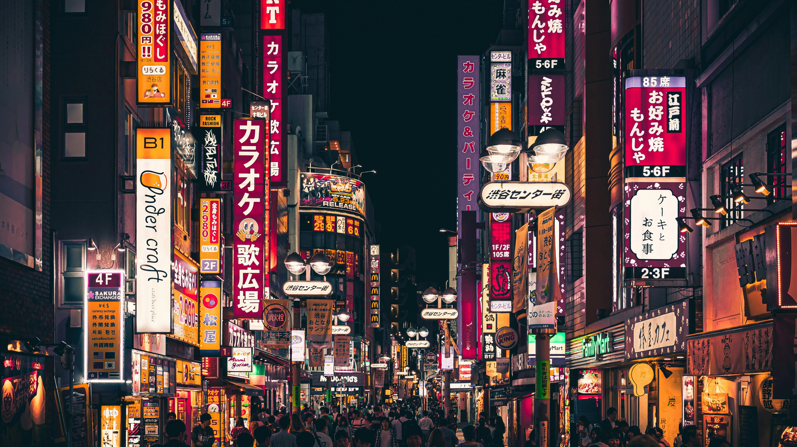

Digital Vision Board
Career Goals

Personal Growth
Travel & Adventure

Career Goals
Todays Date is September 1st
Ctrl + Z – Undo
Ctrl + Y – Redo
Ctrl + S – Save the document
Ctrl + F – Find, search the page
Ctrl + A – Selects the entire document
Ctrl + C – Copies the selected area to the clipboard
Ctrl + X – Deletes the selected area and copies it to the clipboard
Ctrl + V – Pastes from the clipboard
Well, the 2 most important are Ctrl + C to copy things - super simple to get lots of relevant data or lookup necessary information, and Ctrl + V to use that information that was just copied. The third most important one is probably Ctrl + F, super useful when debugging and looking to specific strings